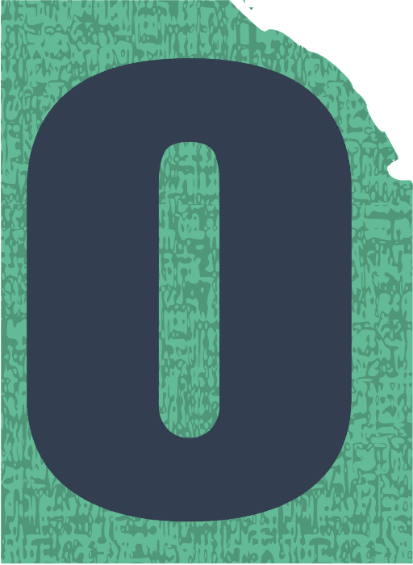
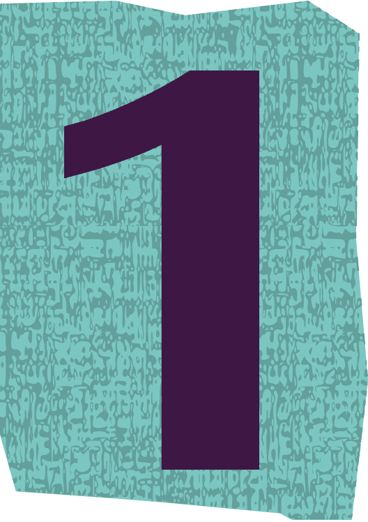
方向 · 工具 · 技能
我是 wyx，一名正在学习数智编程的学生。我喜欢把想法亲手做成可以玩、可以用的东西：从一行行代码写出消除小游戏，到做一个温柔的科普网页，再到搭建你正在看的这个作品集。
说明：百分比为本人学习阶段的主观自评，不是证书成绩。
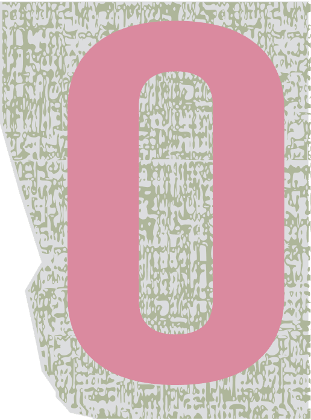
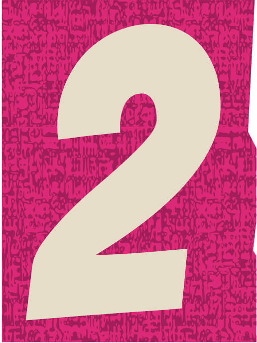
按课程学习顺序展示，每一项都附可打开的成果，而不只是截图
| 顺序 | 作业 / 阶段 | 对应成果（可点击） | 状态 |
|---|---|---|---|
| ① | 小游戏开发作业 | 🎮 梦梦消消乐（在线试玩） | ✅ 已完成并持续迭代 |
| ② | 内容型互动网页作业 | 🌈 心光谱 · 性向测试小屋 | ✅ 已完成 |
| ③ | 实用工具型网页作业 | 🏃 跃动 · 运动技能自学计划 | ✅ 已完成 |
| ④ | AI 应用型网页作业 | 👗 AI 穿搭推荐 · 虚拟形象试衣 | ✅ 已完成 |
| ⑤ | 创意工具型网页作业 | 🐱 桌宠番茄钟 · 陪你专注 | ✅ 已完成 |
| ⑥ | 创意工具型网页作业 | 📝 Markdown 笔记 · 极简写作 | ✅ 已完成 |
| ⑦ | 创意工具型网页作业 | ✅ 待办事项 · 任务管理 | ✅ 已完成 |
| ⑧ | 创意工具型网页作业 | 🌤️ 天气查询 · 实时气象 | ✅ 已完成 |
| ⑨ | 期末作品集（本站） | 🌸 wyx 个人作品集 | 🔄 持续迭代中 |
| ⑩ | 【其他阶段作业】 | 待按课程顺序补充链接 | ⏳ 待补充 |
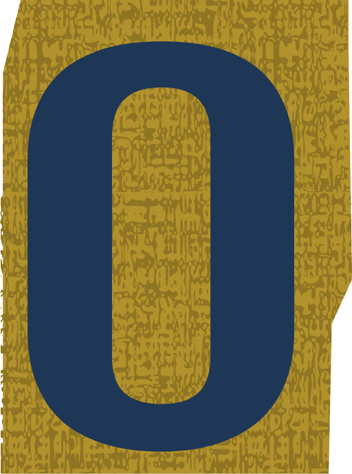
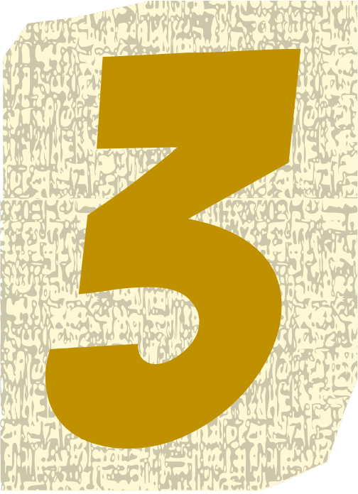
功能 · 入口 · 关键页 · 技术说明（八件作品完全对应）
🔗 项目入口：在线试玩 →
🧩 关键页：登录页 → 7×7 游戏页 → 步数用尽安慰页 → ☁️云端排行榜
🛠 技术：原生 HTML/CSS/JavaScript、Supabase（PostgreSQL 云数据库 + REST/RPC 数据库函数）、Python http.server 备用接口、localStorage
查看本项目的专题复盘 →🔗 项目入口：进入小屋 →（本站内页面）
🧩 关键页：开场页 → 24 题测试页 → 六维结果页 → 科普专区
🛠 技术：原生 HTML/CSS/JavaScript 单文件（约 72 KB），无外部依赖
查看本项目的专题复盘 →🔗 项目入口：进入应用 →（本站内页面）
🧩 关键页：首页/定制计划 → 日历打卡与计划总览表 → 环形计时器跟练 → 进度与里程碑
🛠 技术：原生 HTML/CSS/JavaScript 单文件（约 72 KB）、localStorage、SVG 环形计时器、移动端安全区适配
查看本项目的专题复盘 →🔗 项目入口：进入应用 →（本站内页面）
🧩 关键页：首页 → 身体数据录入 → 捏脸生成形象 → 风格/颜色/技巧多轮问答 → 场合选择 → 方案详情与试穿
🛠 技术：React 18（CDN + Babel 运行时编译）+ Tailwind CSS、自研参数化 2D SVG 头像系统、useReducer + Context 全局状态、本地规则打分推荐引擎（约 88 KB 单文件）
查看本项目的专题复盘 →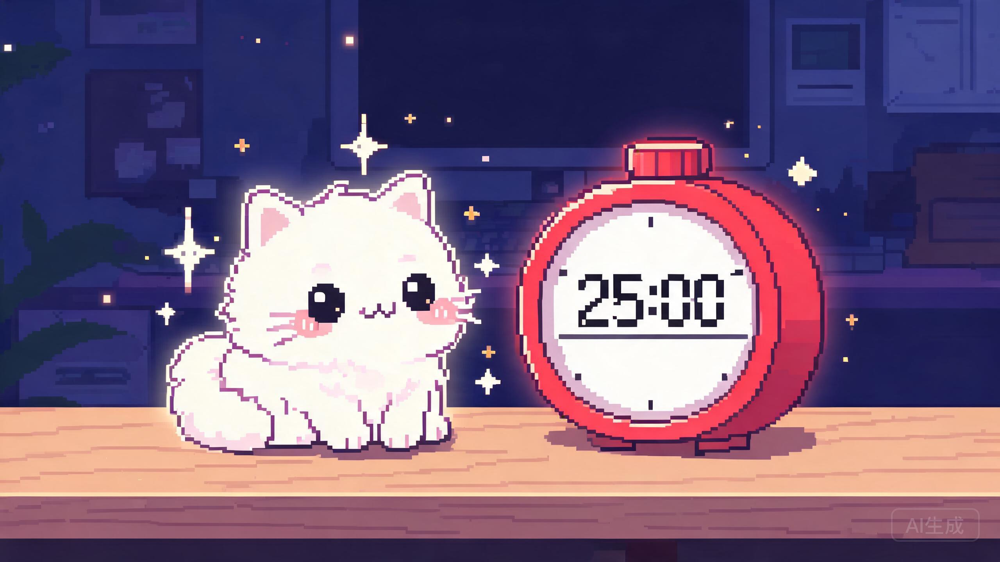
🔗 项目入口：进入应用 →（本站内页面）
🧩 关键页：宠物互动区 → 模式切换 → 倒计时 → 完成弹窗
🛠 技术：原生 HTML/CSS/JavaScript 单文件、CSS 动画（bounce/sleep/blink）、localStorage
查看本项目的专题复盘 →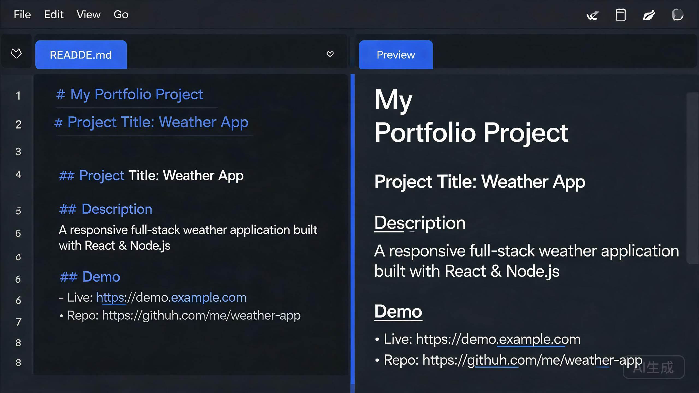
🔗 项目入口：进入应用 →（本站内页面）
🧩 关键页：笔记列表 → 新建/编辑 → 实时预览 → 导出
🛠 技术：原生 HTML/CSS/JavaScript 单文件、正则 Markdown 解析、localStorage
查看本项目的专题复盘 →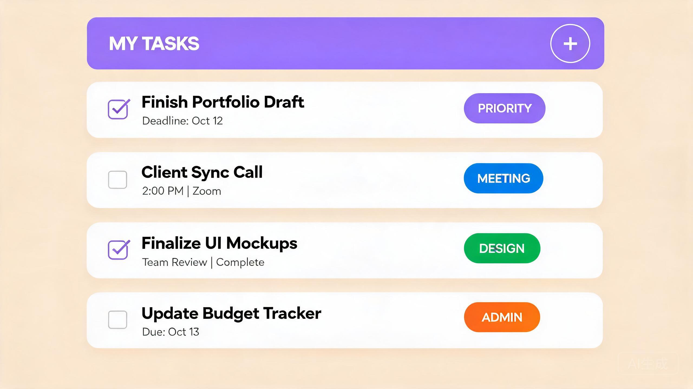
🔗 项目入口：进入应用 →（本站内页面）
🧩 关键页：添加任务 → 筛选标签 → 任务列表 → 编辑弹窗
🛠 技术：原生 HTML/CSS/JavaScript 单文件、localStorage、CSS 动画
查看本项目的专题复盘 →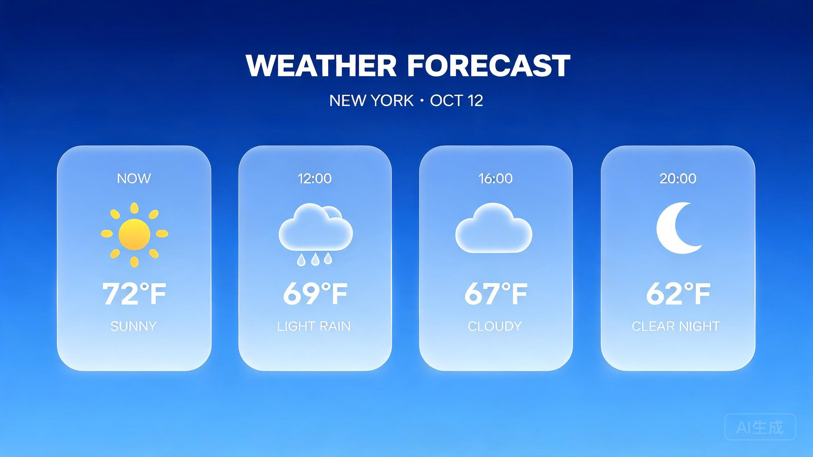
🔗 项目入口：进入应用 →（本站内页面）
🧩 关键页：城市搜索 → 天气主卡片 → 详情指标 → 逐时/逐日预报
🛠 技术：原生 HTML/CSS/JavaScript 单文件、玻璃拟态设计、CSS 动画
查看本项目的专题复盘 →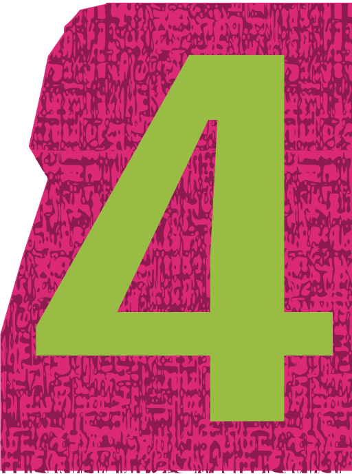
需求 · 原型 · 与 AI 交互关键步骤 · 版本 · 问题解决
[{name, pwd}] 对象数组，不能是字符串数组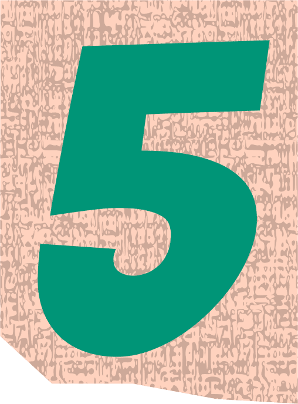
改了什么 · 为什么 · 效果 · 下一步
| 日期 | 改了什么 | 为什么 | 效果 | 下一步 |
|---|---|---|---|---|
| 09-10 v1.0 |
从零搭建作品集网站首版 | 需要一个展示自己与作品的主页 | 简介、成果、留言板、深色模式全部可用 | 用真实反馈检验文案与信息密度 |
| 09-10 v1.1 |
删两段自我介绍；身份“学生·独立开发者”→“学生”；只留一个作品卡；换外链 | 希望页面更简洁，身份与实际一致，链接要能打开 | 首屏更清爽，信息全部属实 | 等有新项目再增补卡片 |
| 09-13 v1.2 |
新增“心光谱·性向测试小屋”项目入口 | 第二个真实项目需要有入口 | 两个项目均可点击使用 | 为项目补功能说明与技术说明 |
| 09-14 v1.3 |
按课程考核标准重构：新增阶段作业、过程证据、迭代记录、专题页、复盘、真实性声明 | 对照“内容与合格标准”自查，缺过程性内容 | 7 项必备内容齐全；外链有效；无敏感信息 | 补手绘原型/截图与各作业真实周次 |
| 09-14 v1.4 |
小屋改为与梦梦消消乐并列的完整项目卡片；AI 交互只留关键步骤；删掉专题页演示入口；恢复考核板块 | 两件作品展示规格要对应；过程证据要精炼；发现考核板块缺失需补回 | 两卡片完全同构并排；考核 7 项内容齐全 | 补真实截图、作业周次与长期托管网址 |
| 09-14 v1.5 |
为心光谱小屋新增与梦梦消消乐同构的专题复盘（横幅+问题/用户/方案/复盘）；两张项目卡底部链接统一指向各自专题 | 两件作品的展示深度要完全对应，不能厚此薄彼 | 两件作品在同一板块内各有一套完整专题 | 补真实截图与作业周次 |
| 09-14 v1.6 |
接入第三个项目《跃动·运动技能自学计划》：新增同构项目卡与专题复盘，阶段作业表增加对应行 | 三件作品的展示规格要完全对应，项目数量增加后仍保持统一结构 | 三件作品卡片/专题一一对齐，入口全部可打开 | 补真实截图与作业周次 |
| 09-18 v1.7 |
消消乐排行榜从本地 Python 接口升级为 Supabase 云端 PostgreSQL：REST/RPC 收分、同名合并最高分、云端→本地→缓存三级降级；作品集卡片与专题同步更新 | 本地服务器只在局域网共享且易掉线，外网好友无法同榜 | 任何网络的设备共享同一云端排行榜，断网时游戏和本地榜仍可用 | 实测云端连通与降级表现；后续可加战绩详情与历史曲线 |
| 10-12 v1.8 |
接入第四个项目《AI 穿搭推荐 · 虚拟形象试衣》：新增同构项目卡与专题复盘，阶段作业表增加对应行 | 四件作品的展示规格要完全对应，项目数量增加后仍保持统一结构 | 四件作品卡片/专题一一对齐，入口全部可打开 | 补真实截图与作业周次 |
| 10-26 v1.9 |
接入四个新工具项目：桌宠番茄钟（CSS 动画宠物 + 番茄钟）、Markdown 笔记（双栏编辑器 + 实时预览）、待办事项（标签 + 优先级 + 进度追踪）、天气查询（玻璃拟态 + 逐时/逐日预报）；各含同构项目卡与专题复盘，阶段作业表扩展至 10 行 | 作品集从 4 件扩展到 8 件，涵盖游戏、测评、工具、AI 应用四大类型，展示技术广度 | 8 张卡片/8 个专题全部同构对齐，入口全部可打开，各子页面保持独立风格 | 补真实截图与作业周次；考虑添加项目分类筛选 |
| 游戏本体的迭代（步数用尽改安慰页、移动端触摸适配、云端排行榜升级等）见上方八件作品的专题复盘卡片。 | ||||
八件作品：问题 · 用户 · 方案 · 复盘
一个有账号、有关卡、有排行榜、在手机上也能玩的消除小游戏
一个不贴标签、温柔讲科学的互动测评与科普网页
选一项运动，自动生成带计时跟练和打卡的从零自学计划
录入身体数据、捏出专属形象，AI 多轮对话生成穿搭方案并实时试穿
一只小宠物用 CSS 动画陪你度过每一个番茄钟
左侧写、右侧看，零干扰的 Markdown 写作环境
标签分类 + 优先级 + 进度追踪，把任务管理得井井有条
玻璃拟态卡片 + 逐时预报 + 生活指数，一目了然看天气
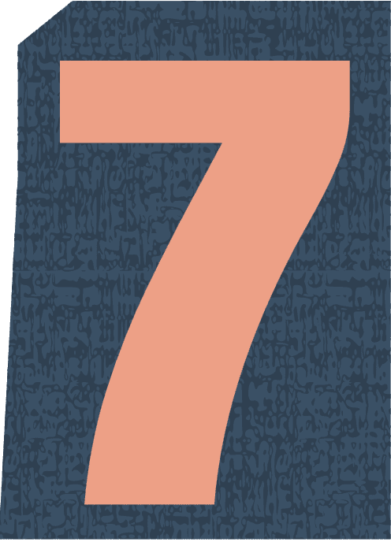
能力变化 · 方法 · 失败 · 计划
真实性声明：本作品集所展示的《梦梦消消乐》《心光谱 · 性向温柔测试与科普小屋》《跃动 · 运动技能自学计划》《AI 穿搭推荐 · 虚拟形象试衣》《桌宠番茄钟 · 陪你专注》《Markdown 笔记 · 极简写作》《待办事项 · 任务管理》《天气查询 · 实时气象》及本网站，均为本人在课程期间真实提出需求、参与设计决策并验收完成的项目。开发过程中使用了 TRAE AI 编程助手辅助生成与调试代码、整理资料；卡通头像与封面示意图由 AI 文生图生成（图中已标注），文案取舍、功能定义与最终判断均由本人完成；未使用付费模板，未把他人作品冒充为自己的成果。
安全声明：本网站为纯静态页面，不包含服务器密码、数据库主密钥（service_role）或他人隐私信息；游戏排行榜使用 Supabase 提供的可公开 publishable 客户端密钥（该密钥设计上可暴露在前端），写入只能通过数据库函数完成，数据库主密钥仅保存在云服务端、从不下发；游戏账号数据保存在玩家自己浏览器的 localStorage 中。
老师/同学如果有建议，欢迎留在这里 💜（仅保存在本机浏览器）